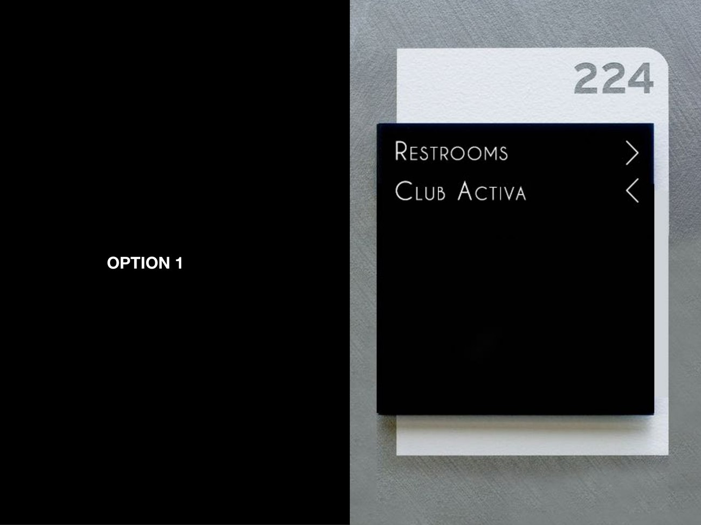
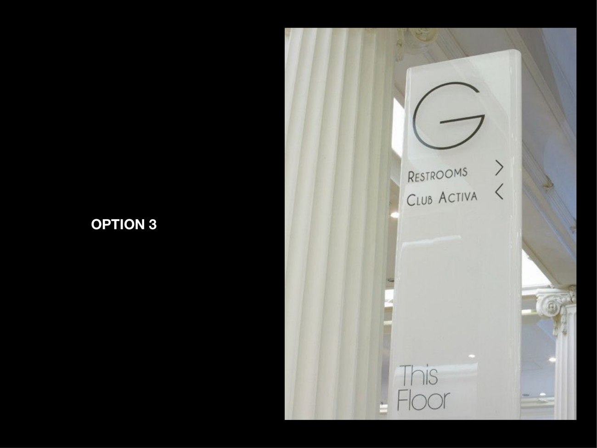
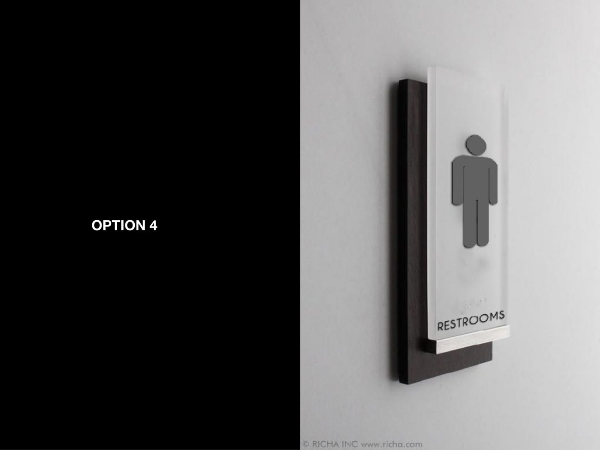
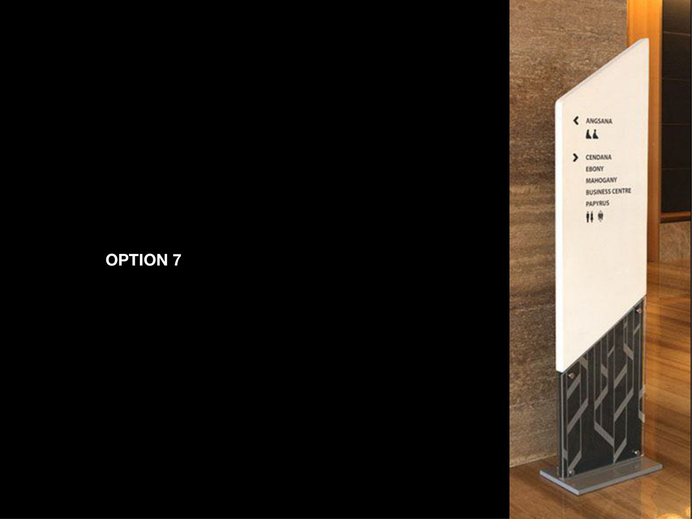
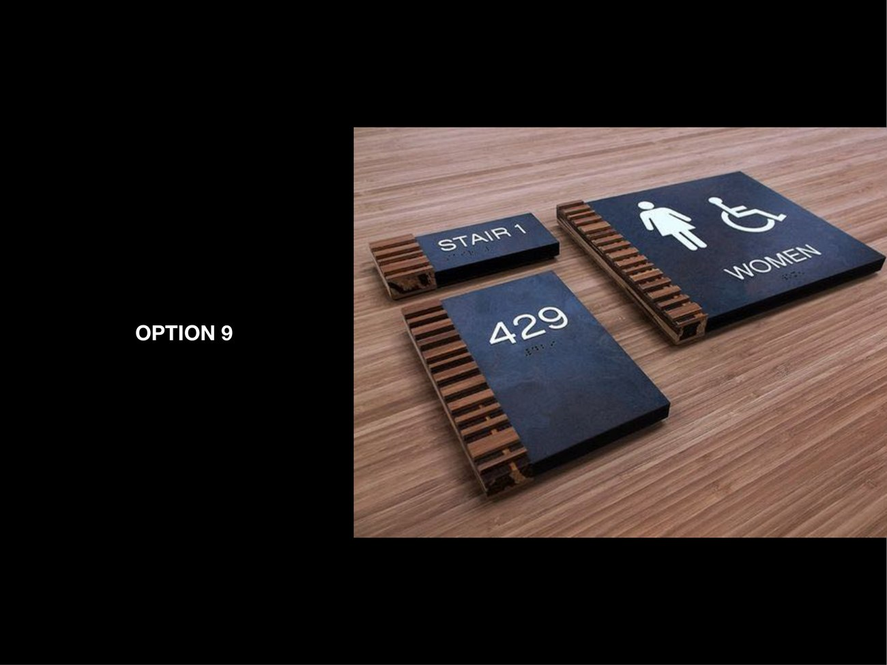
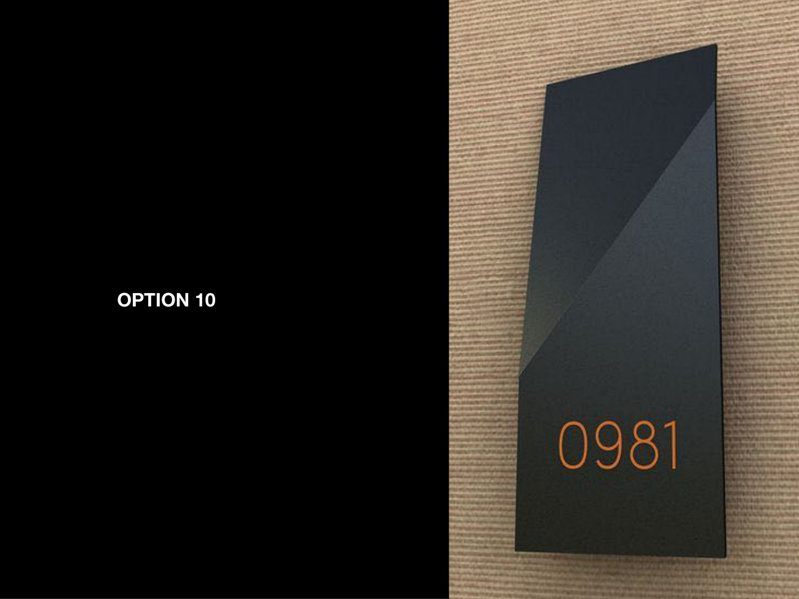
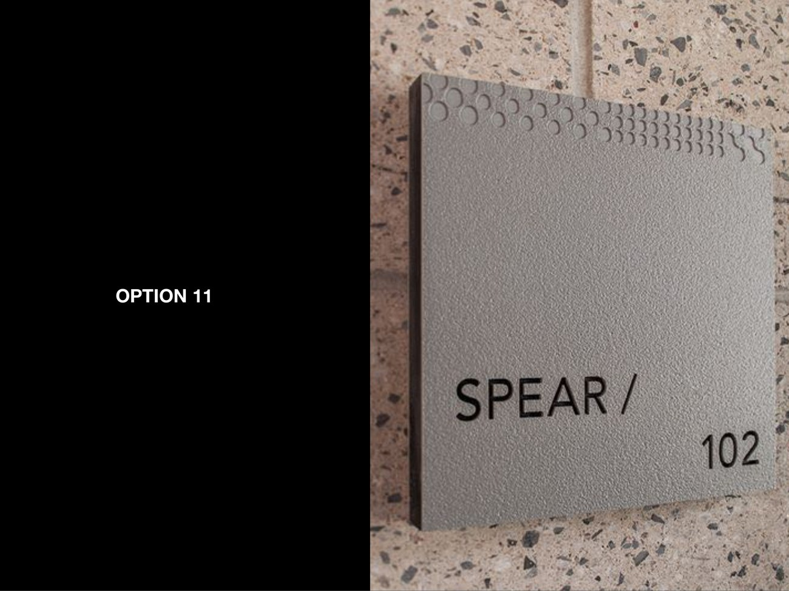
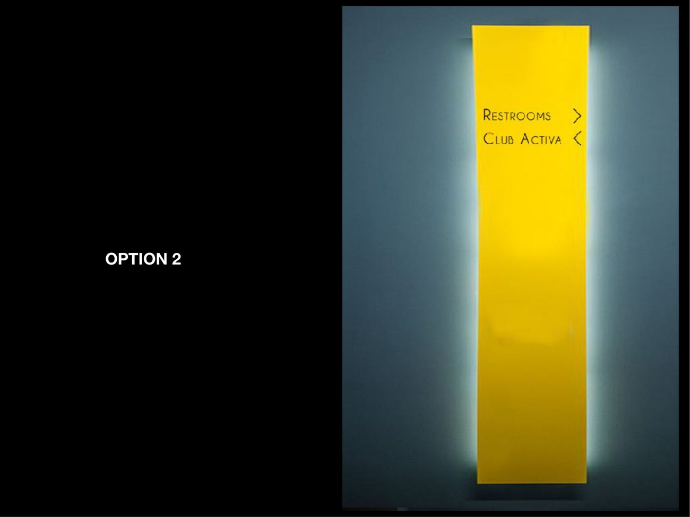
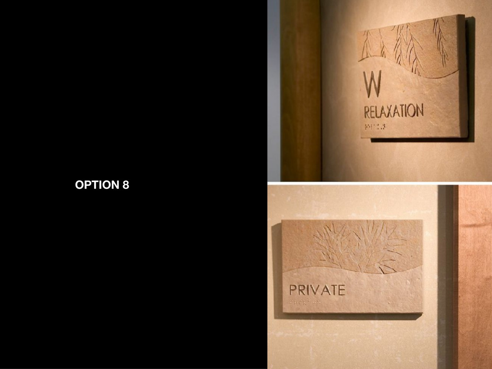

05Related Work
A signage and wayfinding system for DLF developments. One wayfinding logic — directional, identity and environmental signs — explored as a family of material options, from copper numerals on slate to embossed-stone plates and freestanding totems.

Wayfinding is the design you only notice when it fails. For DLF's developments the task was a signage system that could move people through lobbies, clubs and floors without a second thought — legible, calm and unmistakably part of the architecture rather than stuck onto it.
Rather than fix on one finish, the work lays out a family of material options around a single wayfinding grammar, so each property can choose a register — warm wood, cool slate, gilded accent, embossed stone — while the logic underneath stays identical.








Different materials, the same sentence.
Every option shares a wayfinding grammar — the same hierarchy of primary and secondary information, the same arrow language, the same restraint with type. What changes is the substrate and the light: a copper numeral glowing on slate, a pictogram floating off a wall, a number routed into stone. The consistency is in the behaviour, not the finish.
The signs are designed to read as architecture. Freestanding totems carry their own weight; wall plates sit proud with a real shadow line; floor numbers are environmental rather than applied. The goal throughout was signage that a resident stops seeing within a week — because it simply works.